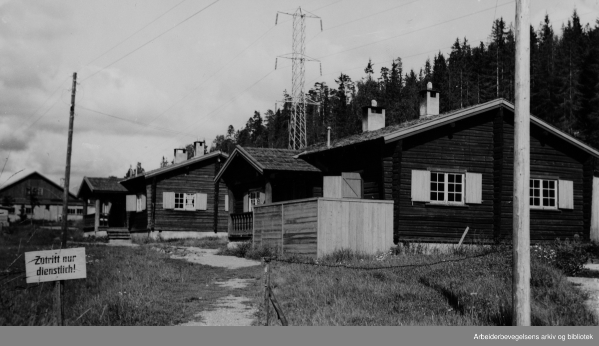
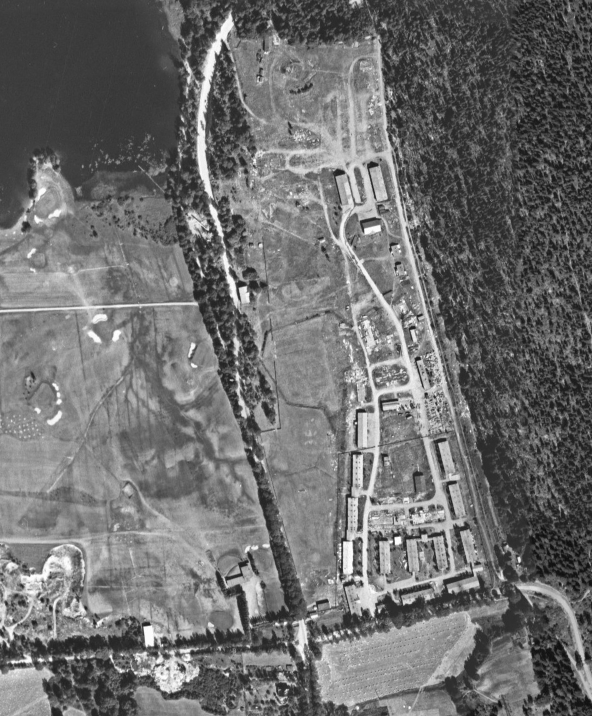
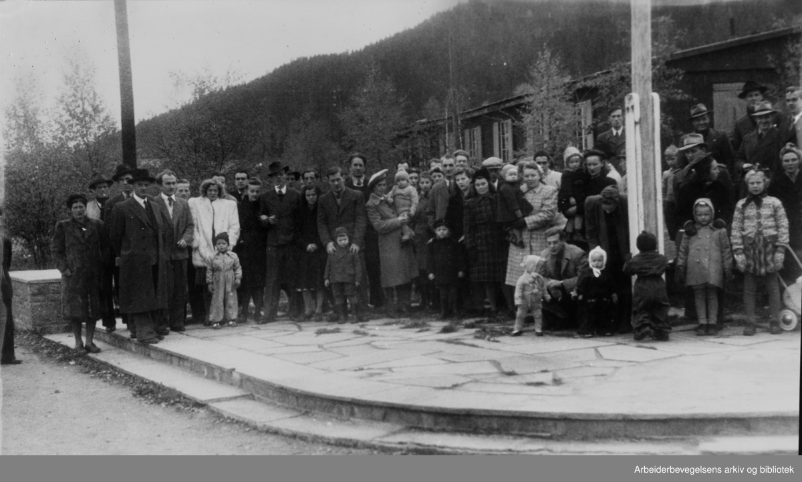
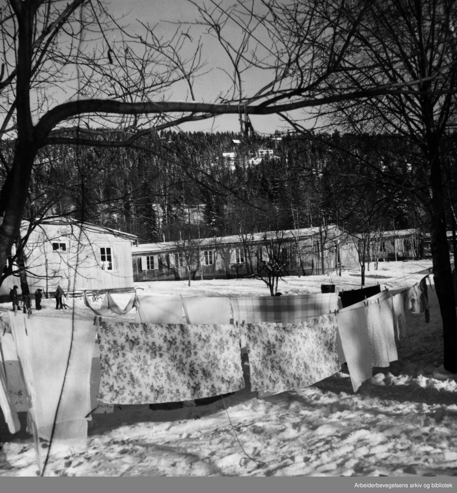

Fra militærleir til brakkeby og campingplass
From military camp to barrack town and campsite
Der Bogstad Camping ligger i dag, lå en gang en av de største tyske militærleirene i Oslo-området. Senere ble soldatbrakkene hjem for husløse familier, og området fikk både barn, barnehage, fabrikk og campinggjester.

Før krigen var dette et åkerlandskap som ble kalt Himstadjordet, etter husmannsplassen Himstad. Området tilhørte opprinnelig Voksen gård, men ble solgt til Bogstad gård i 1917. Under okkupasjonen bygde tyskerne en stor militærleir her, kjent som Lager Bogstad.
Inne i Lager Bogstad
Leiren ble anlagt for et pansergrenaderregiment med bil- og forsyningsavdelinger og ble også brukt til opplæring av rekrutter og yngre soldater. Kildene varierer mellom 34 og 36 bygninger. Her fantes elleve mannskapsbrakker med plass til 90 personer i hver, offisersbrakker, spisebrakker, kontor, vaktbygning, garasjer, staller, latriner, lagerbygninger og verksteder. Stallene hadde plass til 100 hester, mens garasjene kunne romme 40 kjøretøy.
Fra inngangen ved Ankerveien gikk to leirgater nordover mellom brakkene. Omtrent midt i leiren lå en stor, åpen plass. Lenger nord lå lager- og verkstedsbygningene, mens andre bygninger lå spredt i skråningen ned mot området ved dagens badeplass.

Skytebane, miner og sportsfest
Leiren hadde også skytebane, med skytetrening fire dager i uken. Rundt leirområdet var det gravd ned landminer. Langs skogkanten sørover mot Jarbakken var det laget skjulte plasser der militære kjøretøy kunne stå kamuflert.
I månedsskiftet juli–august 1943 ble det arrangert en todagers sportsfest. Deltakerne konkurrerte i svømming i Bogstadvannet, skyting og friidrett. Det stod også håndgranatkasting på programmet. En marsj- og orienteringskonkurranse startet ved Røa-krysset og endte inne i leiren.
Sovjetiske krigsfanger
Bogstadleiren hadde dessuten en avdeling med sovjetiske krigsfanger. Den 1. april 1945 var 44 sovjetiske fanger registrert her. Det er ikke kjent nøyaktig hvor i leiren de bodde.
Etter frigjøringen
I mai 1945 var 958 soldater forlagt på Bogstad. Etter frigjøringen ble området brukt som interneringsleir for tyske soldater som ventet på å bli sendt hjem. Leiren fikk navnet Reservation 46 Bogstad. Da det ble for trangt i brakkene, bygde soldatene 40–50 enkle plankehytter i lia ovenfor leiren. Ifølge Dagbladet oppholdt så mange som 15 000 tyske soldater seg her i februar 1946 mens de ventet på hjemreise.
Brakkeby for husløse familier
Høsten 1946 overtok Oslo kommune det meste av området. Åtte mannskapsbrakker ble delt inn i ti leiligheter hver, slik at 80 husløse familier fikk et sted å bo. Brakkene var kalde, krevde mye fyring og var plaget av små skogmus. Mange bekvemmeligheter måtte deles, og beboerne dannet sin egen velforening for å få forbedret forholdene.

Det bodde så mange barn på Himstadjordet at det i 1947 ble åpnet en egen barnehage i en av brakkene. Terje Paulsen var blant barna som bodde her; han tilbrakte sine første leveår i brakkebyen fra 1947 til 1949.
Bogstad Camping i dag
Bogstad Camping åpnet i 1959. Flere av leirbygningene stod fortsatt, og en tidligere mannskapsbrakke ble gjort om til restaurant. I dag er bare enkelte verkstedsbygninger, to bølgeblikksgarasjer, en offisershytte og de murte portinnrammingene ved Ankerveien bevart. Likevel viser området fortsatt hvor stor Bogstadleiren en gang var.

Where Bogstad Camping lies today, there once lay one of the largest German military camps in the Oslo area. Later the soldiers' barracks became home for homeless families, and the area gained children, a kindergarten, a factory and camping guests.
Before the war this was a landscape of fields called Himstadjordet, after the crofter's holding Himstad. The area originally belonged to Voksen farm, but was sold to Bogstad farm in 1917. During the occupation the Germans built a large military camp here, known as Lager Bogstad.
Inside Lager Bogstad
The camp was laid out for an armoured infantry regiment with motor and supply units and was also used for training recruits and younger soldiers. The sources vary between 34 and 36 buildings. Here there were eleven crew barracks with room for 90 people in each, officers' barracks, mess barracks, an office, a guardhouse, garages, stables, latrines, storehouses and workshops. The stables had room for 100 horses, while the garages could hold 40 vehicles.
From the entrance at Ankerveien, two camp streets ran northwards between the barracks. Roughly in the middle of the camp lay a large, open square. Further north lay the storage and workshop buildings, while other buildings were spread across the slope down towards the area by today's bathing spot.
Shooting range, mines and a sports festival
The camp also had a shooting range, with shooting practice four days a week. Land mines were buried around the camp area. Along the edge of the forest southwards towards Jarbakken, concealed places were made where military vehicles could stand camouflaged.
At the turn of July–August 1943, a two-day sports festival was held. The participants competed in swimming in Bogstadvannet, shooting and athletics. Hand-grenade throwing was also on the programme. A marching and orienteering competition started at the Røa junction and ended inside the camp.
Soviet prisoners of war
Bogstad camp also had a section with Soviet prisoners of war. On 1 April 1945, 44 Soviet prisoners were registered here. It is not known exactly where in the camp they lived.
After the liberation
In May 1945, 958 soldiers were quartered at Bogstad. After the liberation the area was used as an internment camp for German soldiers waiting to be sent home. The camp was named Reservation 46 Bogstad. When the barracks became too crowded, the soldiers built 40–50 simple plank huts on the hillside above the camp. According to Dagbladet, as many as 15,000 German soldiers stayed here in February 1946 while they waited for the journey home.
A barrack town for homeless families
In the autumn of 1946 the City of Oslo took over most of the area. Eight crew barracks were divided into ten apartments each, so that 80 homeless families got somewhere to live. The barracks were cold, required a lot of heating and were plagued by little wood mice. Many amenities had to be shared, and the residents formed their own community association to get the conditions improved.
So many children lived at Himstadjordet that in 1947 a separate kindergarten was opened in one of the barracks. Terje Paulsen was among the children who lived here; he spent his first years of life in the barrack town from 1947 to 1949.
Bogstad Camping today
Bogstad Camping opened in 1959. Several of the camp buildings still stood, and a former crew barrack was converted into a restaurant. Today only a few workshop buildings, two corrugated- iron garages, an officer's cabin and the bricked gate frames at Ankerveien are preserved. Even so, the area still shows how large Bogstad camp once was.
Kilder
- På stubben – Sørkedalen historielag, 2021, vol. 26 nr. 1, s. 87
- DigitaltMuseum – søk «Bogstadleiren»
- Akersposten – «Bogstadleiren i svært dårlig forfatning»
- Dagbladet, 15. februar 1946
- Medlemsblad for Ullern, Røa og Bygdøy historielag, 2023, s. 83
Her er du
Slik blir du med på jakten
Finn stolpene rundt om i Vestre Aker, skann QR-koden og les historien om hvert sted. Velg et kallenavn – så samler du poeng for hvert nye sted du besøker. Ingen innlogging, ingen app.
Se kart og kom i gang